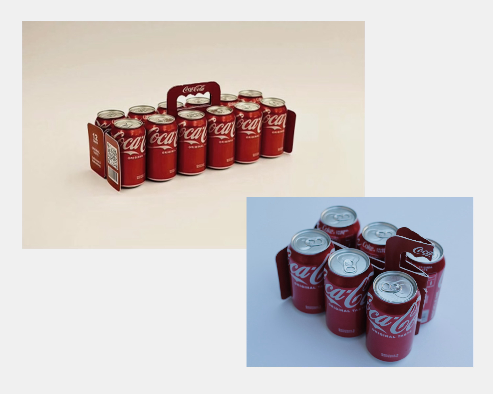
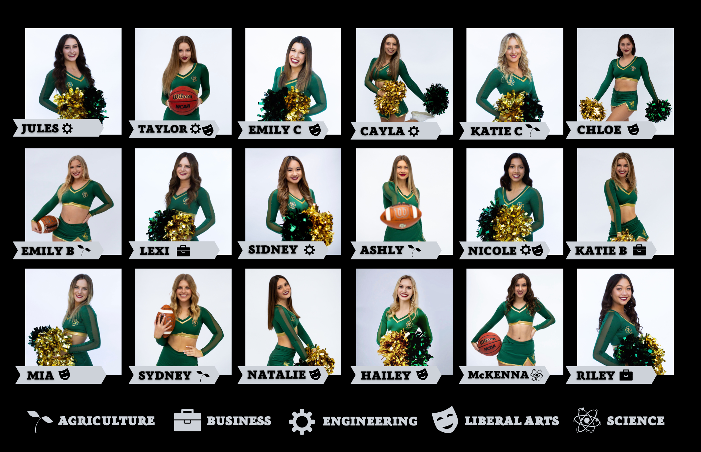
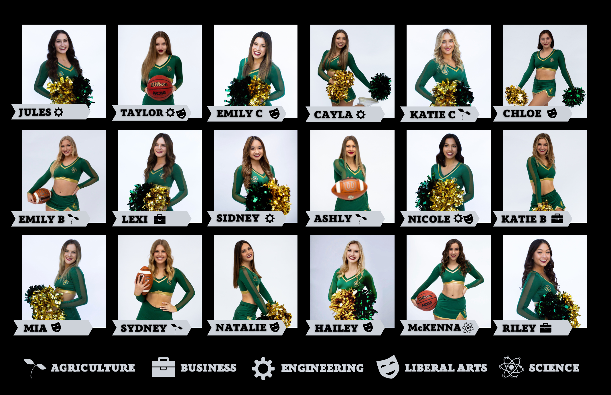
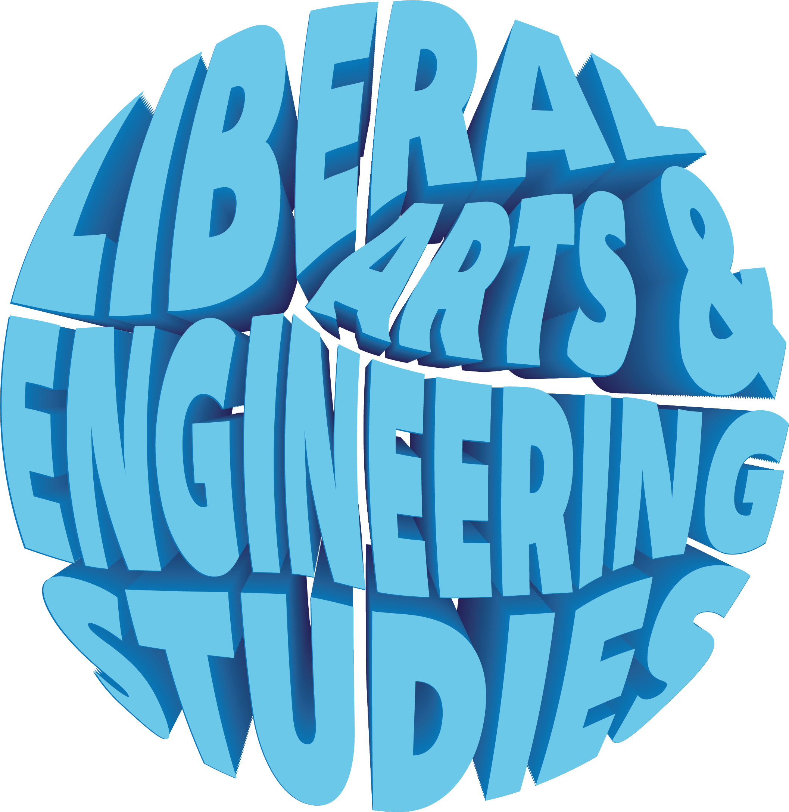
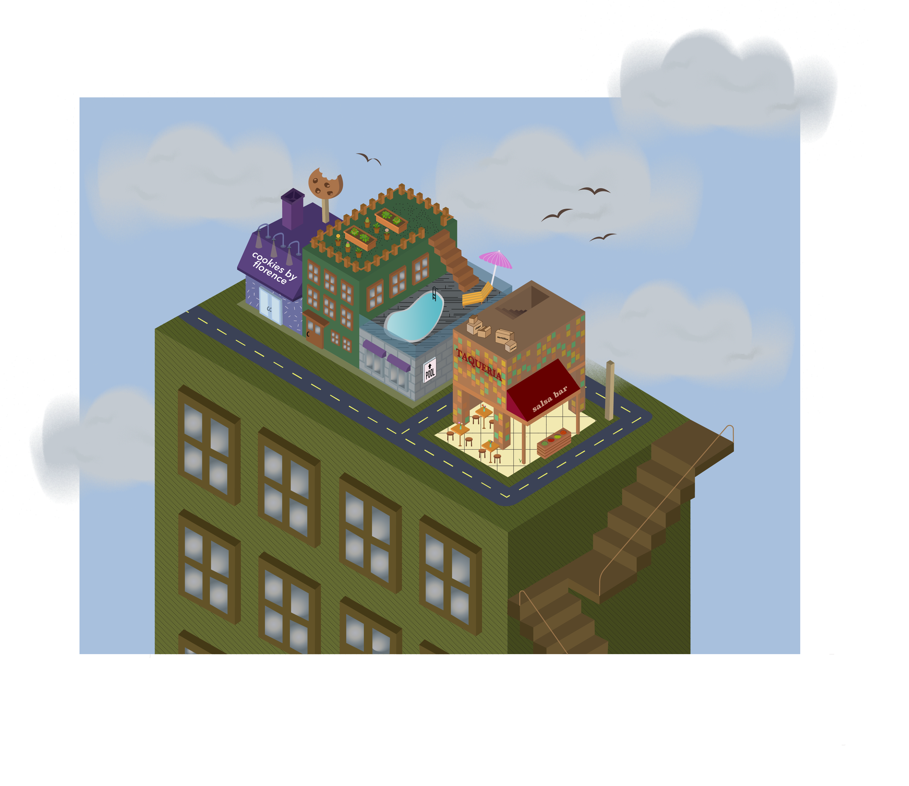

Graphic Design
LAES Offical Department Logo
Eco Pack 2022
Submission for the 13th annual 48 Hour Repack Competition, in partnership with Coca Cola.
My team placed within the top 10 submissions in the nation. As the team's graphic designer, I created the dieline for the Eco Pack packaging.
See our marketing video or product details on the 48HR Repack website below.

Cal Poly Dance Team Posters
Annual poster for the 2022, 2023, and 2024 Cal Poly Dance Team. Managed the team's media accounts from September 2019 to June 2023. View the team's website or instagram below.
 

LAES Club Sticker
Sticker for the Liberal Arts and Engineering Studies club. Made on Adobe Illustrator during term as club president in the 2022-2023 academic school year.

LAES T-Shirt Design
Isometric Design
Isometric "building-ception" design on Adobe Illustrator. Assignment submission for Digital Publishing course at Cal Poly.

Logo Redesign
Juicy Juice logo redesign on Adobe Illustrator as personal graphic design practice.